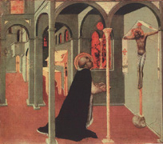
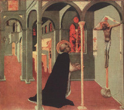

|  |
|---|
Textum Leoninum Romae 1906 editum
et automato translatum a Roberto Busa SJ in taenias magneticas
denuo recognovit Enrique Alarcón atque instruxit


|  |
|---|


[51020] IIIª q. 82 pr. Deinde considerandum est de ministro huius sacramenti. Et circa hoc quaeruntur decem. Primo, utrum consecrare hoc sacramentum sit proprium sacerdotis. Secundo, utrum plures sacerdotes simul possent eandem hostiam consecrare. Tertio, utrum dispensatio huius sacramenti pertineat ad solum sacerdotem. Quarto, utrum liceat sacerdoti consecranti a communione abstinere. Quinto, utrum liceat sacerdoti omnino a celebratione abstinere. Sexto, utrum sacerdos peccator possit conficere hoc sacramentum. Septimo, utrum Missa mali sacerdotis minus valeat quam boni. Octavo, utrum haeretici, schismatici vel excommunicati possint conficere hoc sacramentum. Nono, utrum degradati. Decimo, utrum peccent a talibus communionem recipientes.
[51021] IIIª q. 82 a. 1 arg. 1 Ad primum sic proceditur. Videtur quod consecratio huius sacramenti non proprie sit sacerdotis. Dictum est enim supra quod hoc sacramentum consecratur virtute verborum quae sunt forma huius sacramenti. Sed illa verba non mutantur sive dicantur a sacerdote sive a quocumque alio. Ergo videtur quod non solus sacerdos, sed etiam quilibet alius possit hoc sacramentum consecrare.
[51022] IIIª q. 82 a. 1 arg. 2 Praeterea, sacerdos hoc sacramentum conficit in persona Christi. Sed laicus sanctus est unitus Christo per caritatem. Ergo videtur quod etiam laicus possit hoc sacramentum conficere. Unde et Chrysostomus dicit, super Matth., quod omnis sanctus est sacerdos.
[51023] IIIª q. 82 a. 1 arg. 3 Praeterea, sicut Baptismus ordinatur ad hominum salutem, ita et hoc sacramentum, ut ex supra dictis patet. Sed etiam laicus potest baptizare, ut supra habitum est. Ergo non est proprium sacerdotis conficere hoc sacramentum.
[51024] IIIª q. 82 a. 1 arg. 4 Praeterea, hoc sacramentum perficitur in consecratione materiae. Sed alias materias consecrare, scilicet chrisma et oleum sanctum et oleum benedictum, pertinet ad solum episcopum, quarum tamen consecratio non est tantae dignitatis sicut consecratio Eucharistiae, in qua est totus Christus. Ergo non est proprium sacerdotis, sed solius episcopi, hoc sacramentum conficere.
[51025] IIIª q. 82 a. 1 s. c. Sed contra est quod Isidorus dicit, in quadam epistola, et habetur in decretis, dist. XXV, ad presbyterum pertinet sacramentum corporis et sanguinis domini in altari Dei conficere.
[51026] IIIª q. 82 a. 1 co. Respondeo dicendum quod, sicut supra dictum est, hoc sacramentum tantae est dignitatis quod non conficitur nisi in persona Christi. Quicumque autem aliquid agit in persona alterius, oportet hoc fieri per potestatem ab illo concessam. Sicut autem baptizato conceditur a Christo potestas sumendi hoc sacramentum, ita sacerdoti, cum ordinatur, confertur potestas hoc sacramentum consecrandi in persona Christi, per hoc enim ponitur in gradu eorum quibus dictum est a domino, hoc facite in meam commemorationem. Et ideo dicendum est quod proprium est sacerdotum conficere hoc sacramentum.
[51027] IIIª q. 82 a. 1 ad 1 Ad primum ergo dicendum quod virtus sacramentalis in pluribus consistit, et non in uno tantum, sicut virtus Baptismi consistit et in verbis et in aqua. Unde et virtus consecrativa non solum consistit in ipsis verbis, sed etiam in potestate sacerdoti tradita in sua consecratione vel ordinatione, cum ei dicitur ab episcopo, accipe potestatem offerendi sacrificium in Ecclesia tam pro vivis quam pro mortuis. Nam et virtus instrumentalis in pluribus instrumentis consistit, per quae agit principale agens.
[51028] IIIª q. 82 a. 1 ad 2 Ad secundum dicendum quod laicus iustus unitus est Christo unione spirituali per fidem et caritatem, non autem per sacramentalem potestatem. Et ideo habet spirituale sacerdotium ad offerendum spirituales hostias, de quibus dicitur in Psalmo, sacrificium Deo spiritus contribulatus, et Rom. XII, exhibeatis corpora vestra hostiam viventem. Unde et I Petri II dicitur, sacerdotium sanctum offerre spirituales hostias.
[51029] IIIª q. 82 a. 1 ad 3 Ad tertium dicendum quod perceptio huius sacramenti non est tantae necessitatis sicut perceptio Baptismi, ut ex supra dictis patet. Et ideo, licet in necessitatis articulo laicus possit baptizare, non tamen potest hoc sacramentum conficere.
[51030] IIIª q. 82 a. 1 ad 4 Ad quartum dicendum quod episcopus accipit potestatem ut agat in persona Christi supra corpus eius mysticum, idest super Ecclesiam, quam quidem potestatem non accipit sacerdos in sua consecratione, licet possit eam habere ex episcopi commissione. Et ideo ea quae non pertinent ad dispositionem corporis mystici, non reservantur episcopo, sicut consecratio huius sacramenti. Ad episcopum vero pertinet non solum tradere populo, sed etiam sacerdotibus, ea ex quibus possunt propriis officiis uti. Et quia benedictio chrismatis et olei sancti et olei infirmorum, et aliorum quae consecrantur, puta altaris, Ecclesiae, vestium et vasorum, praestat quandam idoneitatem ad sacramenta perficienda quae pertinent ad officium sacerdotum, ideo tales consecrationes episcopo reservantur, tanquam principi totius ecclesiastici ordinis.
[51031] IIIª q. 82 a. 2 arg. 1 Ad secundum sic proceditur. Videtur quod plures sacerdotes non possunt unam et eandem hostiam consecrare. Dictum est enim supra quod plures non possunt unum baptizare. Sed non minor vis est sacerdotis consecrantis quam hominis baptizantis. Ergo etiam non possunt simul plures unam hostiam consecrare.
[51032] IIIª q. 82 a. 2 arg. 2 Praeterea, quod potest fieri per unum, superflue fit per multos. In sacramentis autem Christi nihil debet esse superfluum. Cum igitur unus sufficiat ad consecrandum, videtur quod plures non possunt unam hostiam consecrare.
[51033] IIIª q. 82 a. 2 arg. 3 Praeterea, sicut Augustinus dicit, super Ioan., hoc sacramentum est sacramentum unitatis. Sed contrarium unitati videtur esse multitudo. Ergo non videtur conveniens esse huic sacramento quod plures sacerdotes eandem hostiam consecrent.
[51034] IIIª q. 82 a. 2 s. c. Sed contra est quod, secundum consuetudinem quarundam Ecclesiarum, sacerdotes, cum de novo ordinantur, concelebrant episcopo ordinanti.
[51035] IIIª q. 82 a. 2 co. Respondeo dicendum quod, sicut supra dictum est, sacerdos, cum ordinatur, constituitur in gradu eorum qui a domino acceperunt potestatem consecrandi in cena. Et ideo, secundum consuetudinem quarundam Ecclesiarum, sicut apostoli Christo cenanti concenaverunt, ita novi ordinati episcopo ordinanti concelebrant. Nec per hoc iteratur consecratio super eandem hostiam, quia, sicut Innocentius III dicit, omnium intentio debet ferri ad idem instans consecrationis.
[51036] IIIª q. 82 a. 2 ad 1 Ad primum ergo dicendum quod Christus non legitur simul baptizasse cum apostolis quando iniunxit eis officium baptizandi. Et ideo non est similis ratio.
[51037] IIIª q. 82 a. 2 ad 2 Ad secundum dicendum quod, si quilibet sacerdotum operaretur in virtute propria, superfluerent alii celebrantes, uno sufficienter celebrante. Sed quia sacerdos non consecrat nisi in persona Christi, multi autem sunt unum in Christo, ideo non refert utrum per unum vel per multos hoc sacramentum consecraretur, nisi quod oportet ritum Ecclesiae servari.
[51038] IIIª q. 82 a. 2 ad 3 Ad tertium dicendum quod Eucharistia est sacramentum unitatis ecclesiasticae, quae attenditur secundum hoc quod multi sunt unum in Christo.
[51039] IIIª q. 82 a. 3 arg. 1 Ad tertium sic proceditur. Videtur quod non pertineat solum ad sacerdotem dispensatio huius sacramenti. Sanguis enim Christi non minus pertinet ad hoc sacramentum quam corpus. Sed sanguis Christi dispensatur per diacones, unde et beatus Laurentius dixit beato Sixto, experire utrum idoneum ministrum elegeris, cui commisisti dominici sanguinis dispensationem. Ergo, pari ratione, dispensatio dominici corporis non pertinet ad solos sacerdotes.
[51040] IIIª q. 82 a. 3 arg. 2 Praeterea, sacerdotes constituuntur ministri sacramentorum. Sed hoc sacramentum perficitur in consecratione materiae, non in usu, ad quem pertinet dispensatio. Ergo videtur quod non pertineat ad sacerdotem corpus domini dispensare.
[51041] IIIª q. 82 a. 3 arg. 3 Praeterea, Dionysius dicit, in libro Eccles. Hier., quod hoc sacramentum habet perfectivam virtutem, sicut et chrisma. Sed signare chrismate baptizatos non pertinet ad sacerdotem, sed ad episcopum. Ergo etiam dispensare hoc sacramentum pertinet ad episcopum, non ad sacerdotem.
[51042] IIIª q. 82 a. 3 s. c. Sed contra est quod dicitur de Consecr., dist. II, pervenit ad notitiam nostram quod quidam presbyteri laico aut feminae corpus domini tradunt ad deferendum infirmis. Ergo interdicit synodus ne talis praesumptio ulterius fiat, sed presbyter per semetipsum infirmos communicet.
[51043] IIIª q. 82 a. 3 co. Respondeo dicendum quod ad sacerdotem pertinet dispensatio corporis Christi, propter tria. Primo quidem quia, sicut dictum est, ipse consecrat in persona Christi. Ipse autem Christus, sicut consecravit corpus suum in cena, ita et aliis sumendum dedit. Unde, sicut ad sacerdotem pertinet consecratio corporis Christi, ita ad eum pertinet dispensatio. Secundo, quia sacerdos constituitur medius inter Deum et populum. Unde, sicut ad eum pertinet dona populi Deo offerre, ita ad eum pertinet dona sanctificata divinitus populo tradere. Tertio quia, in reverentiam huius sacramenti, a nulla re contingitur nisi consecrata, unde et corporale et calix consecrantur, similiter et manus sacerdotis, ad tangendum hoc sacramentum. Unde nulli alii tangere licet, nisi in necessitate puta si caderet in terram, vel in aliquo alio necessitatis casu.
[51044] IIIª q. 82 a. 3 ad 1 Ad primum ergo dicendum quod diaconus, quasi propinquus ordini sacerdotali, aliquid participat de eius officio, ut scilicet dispenset sanguinem, non autem corpus, nisi in necessitate, iubente episcopo vel presbytero. Primo quidem, quia sanguis Christi continetur in vase. Unde non oportet quod tangatur a dispensante, sicut tangitur corpus Christi. Secundo, quia sanguis designat redemptionem a Christo in populum derivatam, unde et sanguini admiscetur aqua, quae significat populum. Et quia diaconi sunt inter sacerdotem et populum, magis convenit diaconibus dispensatio sanguinis quam dispensatio corporis.
[51045] IIIª q. 82 a. 3 ad 2 Ad secundum dicendum quod eiusdem est hoc sacramentum dispensare et consecrare, ratione iam dicta.
[51046] IIIª q. 82 a. 3 ad 3 Ad tertium dicendum quod, sicut diaconus in aliquo participat illuminativam virtutem sacerdotis, inquantum dispensat sanguinem; ita sacerdos participat perfectivam dispensationem episcopi, inquantum dispensat hoc sacramentum, quo perficitur homo secundum se per coniunctionem ad Christum. Aliae autem perfectiones, quibus homo perficitur per comparationem ad alios, episcopo reservantur.
[51047] IIIª q. 82 a. 4 arg. 1 Ad quartum sic proceditur. Videtur quod sacerdos consecrans non teneatur sumere hoc sacramentum. In aliis enim consecrationibus ille qui consecrat materiam, non utitur ea, sicut episcopus consecrans chrisma non linitur eodem. Sed hoc sacramentum consistit in consecratione materiae. Ergo sacerdos perficiens hoc sacramentum non necesse habet uti eodem, sed potest licite a sumptione eius abstinere.
[51048] IIIª q. 82 a. 4 arg. 2 Praeterea, in aliis sacramentis minister non praebet sacramentum sibi ipsi, nullus enim baptizare seipsum potest, ut supra habitum est. Sed, sicut Baptismus ordinate dispensatur, ita et hoc sacramentum. Ergo sacerdos perficiens hoc sacramentum non debet ipsum sumere a seipso.
[51049] IIIª q. 82 a. 4 arg. 3 Praeterea, contingit quandoque quod miraculose corpus Christi in altari apparet sub specie carnis, et sanguis sub specie sanguinis. Quae non sunt apta cibo vel potui, unde, sicut supra dictum est, propter hoc sub alia specie traduntur, ne sint horrori sumentibus. Ergo sacerdos consecrans non semper tenetur sumere hoc sacramentum.
[51050] IIIª q. 82 a. 4 s. c. Sed contra est quod in Concilio Toletano legitur, et habetur de Consecr., dist. II, cap. relatum, modis omnibus tenendum est ut, quotiescumque sacrificans corpus et sanguinem domini nostri Iesu Christi in altario immolat, toties perceptione corporis et sanguinis participem se praebeat.
[51051] IIIª q. 82 a. 4 co. Respondeo dicendum quod, sicut supra dictum est, Eucharistia non solum est sacramentum, sed etiam sacrificium. Quicumque autem sacrificium offert, debet fieri sacrificii particeps. Quia exterius sacrificium quod offert, signum est interioris sacrificii quo quis seipsum offert Deo, ut Augustinus dicit, X de Civ. Dei. Unde per hoc quod participat sacrificio, ostendit ad se sacrificium interius pertinere. Similiter etiam per hoc quod sacrificium populo dispensat, ostendit se esse dispensatorem divinorum populo. Quorum ipse primo debet esse particeps, sicut Dionysius dicit, in libro Eccles. Hier. Et ideo ipse ante sumere debet quam populo dispenset. Unde in praedicto capite legitur, quale est sacrificium cui nec ipse sacrificans particeps esse dignoscitur? Per hoc autem fit particeps quod de sacrificio sumit, secundum illud apostoli, I Cor. X, nonne qui edunt hostias, participes sunt altaris? Et ideo necesse est quod sacerdos, quotiescumque consecrat, sumat hoc sacramentum integre.
[51052] IIIª q. 82 a. 4 ad 1 Ad primum ergo dicendum quod consecratio chrismatis, vel cuiuscumque alterius materiae, non est sacrificium, sicut consecratio Eucharistiae. Et ideo non est similis ratio.
[51053] IIIª q. 82 a. 4 ad 2 Ad secundum dicendum quod sacramentum Baptismi perficitur in ipso usu materiae. Et ideo nullus potest baptizare seipsum, quia in sacramento non potest esse idem agens et patiens. Unde nec in hoc sacramento sacerdos consecrat seipsum, sed panem et vinum, in qua consecratione conficitur hoc sacramentum. Usus autem sacramenti est consequenter se habens ad hoc sacramentum. Et ideo non est simile.
[51054] IIIª q. 82 a. 4 ad 3 Ad tertium dicendum quod, si miraculose corpus Christi in altari sub specie carnis appareat, aut sanguis sub specie sanguinis, non est sumendum. Dicit enim Hieronymus, super Levit., de hac quidem hostia quae in Christi commemoratione mirabiliter fit, de illa vero quam Christus in ara crucis obtulit secundum se, nulli edere licet. Nec propter hoc sacerdos transgressor efficitur, quia ea quae miraculose fiunt, legibus non subduntur. Consulendum tamen esset sacerdoti quod iterato corpus et sanguinem domini consecraret et sumeret.
[51055] IIIª q. 82 a. 5 arg. 1 Ad quintum sic proceditur. Videtur quod malus sacerdos Eucharistiam consecrare non possit. Dicit enim Hieronymus, super Sophoniam, sacerdotes, qui Eucharistiae serviunt et sanguinem domini dividunt, impie agunt in legem Christi, putantes Eucharistiam precantis facere verba, non vitam; et necessariam esse solemnem orationem, et non sacerdotis merita. De quibus dicitur, sacerdos, in quocumque fuerit macula, non accedat offerre oblationes domino. Sed sacerdos peccator, cum sit maculosus, nec vitam habet nec merita huic convenientia sacramento. Ergo sacerdos peccator non potest consecrare Eucharistiam.
[51056] IIIª q. 82 a. 5 arg. 2 Praeterea, Damascenus dicit, in IV libro, quod panis et vinum, per adventum sancti spiritus, supernaturaliter transit in corpus domini et sanguinem. Sed Gelasius Papa dicit, et habetur in decretis, I, qu. I, cap. sacrosancta, quomodo ad divini mysterii consecrationem caelestis spiritus invocatus adveniet, si sacerdos qui eum adesse deprecatur, criminosis plenus actionibus comprobetur? Ergo per malum sacerdotem non potest Eucharistia consecrari.
[51057] IIIª q. 82 a. 5 arg. 3 Praeterea, hoc sacramentum sacerdotis benedictione consecratur. Sed benedictio sacerdotis peccatoris non est efficax ad consecrationem huius sacramenti, cum scriptum sit, maledicam benedictionibus vestris. Et Dionysius dicit, in epistola ad Demophilum monachum, perfecte cecidit a sacerdotali ordine qui non est illuminatus, et audax quidem mihi videtur talis, sacerdotalibus manum apponens; et audet immundas infamias, non enim dicam orationes, super divina symbola Christiformiter enuntiare.
[51058] IIIª q. 82 a. 5 s. c. Sed contra est quod Augustinus dicit, in libro de corpore domini, intra Ecclesiam Catholicam, in mysterio corporis et sanguinis domini, nihil a bono maius, nihil a malo minus perficitur sacerdote, quia non in merito consecrantis, sed in verbo perficitur creatoris, et in virtute spiritus sancti.
[51059] IIIª q. 82 a. 5 co. Respondeo dicendum quod, sicut supra dictum est, sacerdos consecrat hoc sacramentum non in virtute propria, sed sicut minister Christi, in cuius persona consecrat hoc sacramentum. Non autem ex hoc ipso desinit aliquis esse minister Christi quod est malus, habet enim dominus bonos et malos ministros seu servos. Unde, Matth. XXIV, dominus dicit, quis, putas, est fidelis servus et prudens, etc.; et postea subdit, si autem dixerit malus ille servus in corde suo, et cetera. Et apostolus dicit, I Cor. IV, sic nos existimet homo ut ministros Christi, et tamen postea subdit, nihil mihi conscius sum, sed non in hoc iustificatus sum. Erat ergo certus se esse ministrum Christi, non tamen erat certus se esse iustum. Potest ergo aliquis esse minister Christi etiam si iustus non sit. Et hoc ad excellentiam Christi pertinet, cui, sicut vero Deo, serviunt non solum bona, sed etiam mala, quae per ipsius providentiam in eius gloriam ordinantur. Unde manifestum est quod sacerdotes, etiam si non sint iusti, sed peccatores, possunt Eucharistiam consecrare.
[51060] IIIª q. 82 a. 5 ad 1 Ad primum ergo dicendum quod Hieronymus per illa verba improbat errorem sacerdotum qui credebant se digne posse Eucharistiam consecrare ex hoc solo quod sunt sacerdotes, etiam si sint peccatores. Quod improbat Hieronymus per hoc quod maculosi ad altare accedere prohibentur. Non tamen removetur quin, si accesserint, sit verum sacrificium quod offerunt.
[51061] IIIª q. 82 a. 5 ad 2 Ad secundum dicendum quod ante illa verba Gelasius Papa praemittit, sacrosancta religio, quae Catholicam continet disciplinam, tantam sibi reverentiam vindicat ut ad eam quilibet nisi pura conscientia non audeat pervenire. Ex quo manifeste apparet eius intentionis esse quod peccator sacerdos non debet accedere ad hoc sacramentum. Unde per hoc quod subdit, quomodo caelestis spiritus advocatus adveniet, intelligi oportet quod non advenit ex merito sacerdotis, sed ex virtute Christi, cuius verba profert sacerdos.
[51062] IIIª q. 82 a. 5 ad 3 Ad tertium dicendum quod, sicut eadem actio, inquantum fit ex prava intentione ministri, potest esse mala, bona autem inquantum fit ex bona intentione domini; ita benedictio sacerdotis peccatoris, inquantum ab ipso indigne fit, est maledictione digna, et quasi infamia seu blasphemia, et non oratio reputatur; inquantum autem profertur ex persona Christi, est sancta et efficax. Unde signanter dicitur, maledicam benedictionibus vestris.
[51063] IIIª q. 82 a. 6 arg. 1 Ad sextum sic proceditur. Videtur quod Missa sacerdotis mali non minus valeat quam Missa sacerdotis boni. Dicit enim Gregorius, in registro, heu, in quam magnum laqueum incidunt qui divina et occulta mysteria plus ab aliis sanctificata fieri posse credunt, cum unus idemque spiritus sanctus ea mysteria occulte atque invisibiliter operando sanctificet. Sed haec occulta mysteria celebrantur in Missa. Ergo Missa mali sacerdotis non minus valet quam Missa boni.
[51064] IIIª q. 82 a. 6 arg. 2 Praeterea, sicut Baptismus traditur a ministro in virtute Christi, qui baptizat, ita et hoc sacramentum, quod in persona Christi consecratur. Sed non melior Baptismus datur a meliori ministro, ut supra habitum est. Ergo neque etiam melior Missa est quae celebratur a meliori sacerdote.
[51065] IIIª q. 82 a. 6 arg. 3 Praeterea, sicut merita sacerdotum differunt per bonum et melius, ita etiam differunt per bonum et malum. Si ergo Missa melioris sacerdotis est melior, sequitur quod Missa mali sacerdotis sit mala. Quod est inconveniens, quia malitia ministrorum non potest redundare in Christi mysteria; sicut Augustinus dicit, in libro de Baptismo. Ergo neque Missa melioris sacerdotis est melior.
[51066] IIIª q. 82 a. 6 s. c. Sed contra est quod habetur I, qu. I, quanto sacerdotes fuerint digniores, tanto facilius in necessitatibus pro quibus clamant, exaudiuntur.
[51067] IIIª q. 82 a. 6 co. Respondeo dicendum quod in Missa duo est considerare; scilicet ipsum sacramentum, quod est principale; et orationes quae in Missa fiunt pro vivis et mortuis. Quantum ergo ad sacramentum, non minus valet Missa mali sacerdotis quam boni, quia utrobique idem conficitur sacramentum. Oratio etiam quae fit in Missa, potest considerari dupliciter. Uno modo, inquantum habet efficaciam ex devotione sacerdotis orantis. Et sic non est dubium quod Missa melioris sacerdotis magis est fructuosa. Alio modo, inquantum oratio in Missa profertur a sacerdote in persona totius Ecclesiae, cuius sacerdos est minister. Quod quidem ministerium etiam in peccatoribus manet, sicut supra dictum est de ministerio Christi. Unde quantum ad hoc, est fructuosa non solum oratio sacerdotis peccatoris in Missa, sed etiam omnes aliae eius orationes quas facit in ecclesiasticis officiis, in quibus gerit personam Ecclesiae. Sed orationes eius privatae non sunt fructuosae, secundum illud Proverb. XXVIII, qui declinat aurem suam ne audiat legem, oratio eius erit execrabilis.
[51068] IIIª q. 82 a. 6 ad 1 Ad primum ergo dicendum quod Gregorius loquitur ibi quantum ad sanctitatem divini sacramenti.
[51069] IIIª q. 82 a. 6 ad 2 Ad secundum dicendum quod in sacramento Baptismi non fiunt solemnes orationes pro omnibus fidelibus, sicut in Missa. Et ideo quantum ad hoc non est simile. Est autem simile quantum ad effectum sacramenti.
[51070] IIIª q. 82 a. 6 ad 3 Ad tertium dicendum quod propter virtutem spiritus sancti, qui per unitatem caritatis communicat invicem bona membrorum Christi, fit quod bonum privatum quod est in Missa sacerdotis boni, est fructuosum aliis. Malum autem privatum unius hominis non potest alteri nocere, nisi per aliqualem consensum, ut Augustinus dicit, in libro contra Parmenianum.
[51071] IIIª q. 82 a. 7 arg. 1 Ad septimum sic proceditur. Videtur quod haeretici et schismatici et excommunicati consecrare non possunt. Dicit enim Augustinus quod extra Ecclesiam Catholicam non est locus veri sacrificii. Et Leo Papa dicit, et habetur in decretis, I, qu. I, aliter, (scilicet quam in Ecclesia, quae corpus Christi est) nec rata sunt sacerdotia, nec vera sacrificia. Sed haeretici, schismatici et excommunicati sunt ab Ecclesia separati. Ergo non possunt verum sacrificium conficere.
[51072] IIIª q. 82 a. 7 arg. 2 Praeterea, sicut legitur ibidem, Innocentius Papa dicit, Arianos, ceterasque huiusmodi pestes, quia laicos eorum sub imagine poenitentiae suscipimus, non videntur clerici eorum cum sacerdotii aut cuiuspiam mysterii suscipiendi dignitate esse, quibus solum Baptisma ratum esse permittimus. Sed non potest aliquis consecrare Eucharistiam nisi sit cum sacerdotii dignitate. Ergo haeretici, et ceteri huiusmodi, non possunt Eucharistiam conficere.
[51073] IIIª q. 82 a. 7 arg. 3 Praeterea, ille qui est extra Ecclesiam, non videtur aliquid posse agere in persona totius Ecclesiae. Sed sacerdos consecrans Eucharistiam hoc agit in persona totius Ecclesiae, quod patet ex hoc quod omnes orationes proponit in persona Ecclesiae. Ergo videtur quod illi qui sunt extra Ecclesiam, scilicet haeretici et schismatici et excommunicati, non possunt consecrare Eucharistiam.
[51074] IIIª q. 82 a. 7 s. c. Sed contra est quod Augustinus dicit, in II contra Parmen., sicut Baptismus in eis, scilicet haereticis, schismaticis et excommunicatis, ita ordinatio mansit integra. Sed ex vi ordinationis sacerdos potest consecrare Eucharistiam. Ergo haeretici, schismatici et excommunicati, cum in eis maneat ordinatio integra, videtur quod possint consecrare Eucharistiam.
[51075] IIIª q. 82 a. 7 co. Respondeo dicendum quod quidam dixerunt quod haeretici, schismatici et excommunicati, quia sunt extra Ecclesiam, non possunt conficere hoc sacramentum. Sed in hoc decipiuntur. Quia, sicut Augustinus dicit, in II contra Parmen., aliud est aliquid omnino non habere, aliud autem non recte habere, et similiter est etiam aliud non dare, et aliud non recte dare. Illi igitur qui, intra Ecclesiam constituti, receperunt potestatem consecrandi in ordinatione sacerdotii, recte quidem habent potestatem, sed non recte ea utuntur, si postmodum per haeresim aut schisma vel excommunicationem ab Ecclesia separentur. Qui autem sic separati ordinantur, nec recte habent potestatem, nec recte utuntur. Quod tamen utrique potestatem habeant, per hoc patet quod, sicut Augustinus ibidem dicit, cum redeunt ad unitatem Ecclesiae, non reordinantur, sed recipiuntur in suis ordinibus. Et quia consecratio Eucharistiae est actus consequens ordinis potestatem, illi qui sunt ab Ecclesia separati per haeresim aut schisma vel excommunicationem, possunt quidem consecrare Eucharistiam, quae ab eis consecrata verum corpus Christi et sanguinem continet, non tamen recte hoc faciunt, sed peccant facientes. Et ideo fructum sacrificii non percipiunt, quod est sacrificium spirituale.
[51076] IIIª q. 82 a. 7 ad 1 Ad primum ergo dicendum quod auctoritas illa et similes intelligendae sunt quantum ad hoc quod non recte extra Ecclesiam sacrificium offertur. Unde extra Ecclesiam non potest esse spirituale sacrificium, quod est verum veritate fructus, licet sit verum veritate sacramenti, sicut etiam supra dictum est quod peccator sumit corpus Christi sacramentaliter, sed non spiritualiter.
[51077] IIIª q. 82 a. 7 ad 2 Ad secundum dicendum quod solus Baptismus permittitur esse ratus haereticis et schismaticis, quia possunt licite baptizare in articulo necessitatis. In nullo autem casu licite possunt Eucharistiam consecrare, vel alia sacramenta conferre.
[51078] IIIª q. 82 a. 7 ad 3 Ad tertium dicendum quod sacerdos in Missa in orationibus quidem loquitur in persona Ecclesiae, in cuius unitate consistit. Sed in consecratione sacramenti loquitur in persona Christi, cuius vicem in hoc gerit per ordinis potestatem. Et ideo, si sacerdos ab unitate Ecclesiae praecisus Missam celebret, quia potestatem ordinis non amittit, consecrat verum corpus et sanguinem Christi, sed quia est ab Ecclesiae unitate separatus, orationes eius efficaciam non habent.
[51079] IIIª q. 82 a. 8 arg. 1 Ad octavum sic proceditur. Videtur quod sacerdos degradatus non possit hoc sacramentum conficere. Nullus enim conficit hoc sacramentum nisi per potestatem consecrandi quam habet. Sed degradatus non habet potestatem consecrandi, licet habeat potestatem baptizandi, ut dicit canon. Ergo videtur quod presbyter degradatus non possit Eucharistiam consecrare.
[51080] IIIª q. 82 a. 8 arg. 2 Praeterea, ille qui aliquid dat, potest etiam auferre. Sed episcopus dat presbytero potestatem consecrandi ordinando ipsum. Ergo etiam potest ei auferre degradando ipsum.
[51081] IIIª q. 82 a. 8 arg. 3 Praeterea, sacerdos per degradationem aut amittit potestatem consecrandi, aut solam executionem. Sed non solam executionem, quia sic non plus amitteret degradatus quam excommunicatus, qui executione caret. Ergo videtur quod amittit potestatem consecrandi. Et ita videtur quod non possit conficere hoc sacramentum.
[51082] IIIª q. 82 a. 8 s. c. Sed contra est quod Augustinus, in II contra Parmen., probat quod apostatae a fide non carent Baptismate, per hoc quod per poenitentiam redeuntibus non restituitur, et ideo non posse amitti iudicatur. Sed similiter degradatus, si reconcilietur, non est iterum ordinandus. Ergo non amisit potestatem consecrandi. Et ita sacerdos degradatus potest conficere hoc sacramentum.
[51083] IIIª q. 82 a. 8 co. Respondeo dicendum quod potestas consecrandi Eucharistiam pertinet ad characterem sacerdotalis ordinis. Character autem quilibet, quia cum quadam consecratione datur, indelebilis est, ut supra dictum est, sicut et quarumcumque rerum consecrationes perpetuae sunt, nec amitti nec reiterari possunt. Unde manifestum est quod potestas consecrandi non amittitur per degradationem. Dicit enim Augustinus, in II contra Parmen., utrumque, scilicet Baptismus et ordo, sacramentum est, et quadam consecratione utrumque homini datur, et illud cum baptizatur, et illud cum ordinatur. Ideo non licet a Catholicis utrumque iterari. Et sic patet quod sacerdos degradatus potest conficere hoc sacramentum.
[51084] IIIª q. 82 a. 8 ad 1 Ad primum ergo dicendum quod canon ille non loquitur assertive, sed inquisitive, sicut ex circumstantia litterae haberi potest.
[51085] IIIª q. 82 a. 8 ad 2 Ad secundum dicendum quod episcopus non dat potestatem sacerdotalis ordinis propria virtute, sed instrumentaliter, sicut minister Dei, cuius effectus per hominem tolli non potest, secundum illud Matth. XIX, quos Deus coniunxit, homo non separet. Et ideo episcopus non potest hanc potestatem auferre, sicut nec ille qui baptizat potest auferre characterem baptismalem.
[51086] IIIª q. 82 a. 8 ad 3 Ad tertium dicendum quod excommunicatio est medicinalis. Et ideo excommunicatis non aufertur executio sacerdotalis potestatis quasi in perpetuum, sed ad correctionem, usque ad tempus. Degradatis autem aufertur executio quasi in perpetuum condemnatis.
[51087] IIIª q. 82 a. 9 arg. 1 Ad nonum sic proceditur. Videtur quod aliquis licite possit communionem recipere a sacerdotibus haereticis vel excommunicatis, vel etiam peccatoribus, et ab eis Missam audire. Sicut enim Augustinus, contra Petilianum, dicit, neque in homine bono neque in homine malo aliquis Dei fugiat sacramenta. Sed sacerdotes, quamvis sint peccatores et haeretici vel excommunicati, verum conficiunt sacramentum. Ergo videtur quod non sit vitandum ab eis communionem accipere vel eorum Missam audire.
[51088] IIIª q. 82 a. 9 arg. 2 Praeterea, corpus Christi verum figurativum est corporis mystici, sicut supra dictum est. Sed a praedictis sacerdotibus verum corpus Christi consecratur. Ergo videtur quod illi qui sunt de corpore mystico, possint eorum sacrificiis communicare.
[51089] IIIª q. 82 a. 9 arg. 3 Praeterea, multa peccata sunt graviora quam fornicatio. Sed non est prohibitum audire Missas sacerdotum aliter peccantium. Ergo etiam non debet esse prohibitum audire Missas sacerdotum fornicariorum.
[51090] IIIª q. 82 a. 9 s. c. Sed contra est quod canon dicit, XXXII dist., nullus audiat Missam sacerdotis quem indubitanter concubinam novit habere. Et Gregorius dicit, in III Dialog., quod pater perfidus Arianum episcopum misit ad filium, ut ex eius manu sacrilegae consecrationis communionem acciperet, sed vir Deo devotus Ariano episcopo venienti exprobravit ut debuit.
[51091] IIIª q. 82 a. 9 co. Respondeo dicendum quod, sicut supra dictum est, sacerdotes, si sint haeretici vel schismatici vel excommunicati, vel etiam peccatores, quamvis habeant potestatem consecrandi Eucharistiam, non tamen ea recte utuntur, sed peccant utentes. Quicumque autem communicat alicui in peccato, ipse particeps peccati efficitur, unde et in secunda canonica Ioannis legitur quod qui dixerit ei, ave, scilicet haeretico, communicat operibus illius malignis. Et ideo non licet a praedictis communionem accipere aut eorum Missam audire. Differt tamen inter praedictas sectas. Nam haeretici et schismatici et excommunicati sunt per sententiam Ecclesiae executione consecrandi privati. Et ideo peccat quicumque eorum Missam audit vel ab eis accipit sacramenta. Sed non omnes peccatores sunt per sententiam Ecclesiae executione huius potestatis privati. Et sic, quamvis sint suspensi quantum est ex sententia divina, non tamen quantum ad alios ex sententia Ecclesiae. Et ideo, usque ad sententiam Ecclesiae, licet ab eis communionem accipere et eorum Missam audire. Unde super illud I Cor. V, cum huiusmodi nec cibum sumere, dicit Glossa Augustini, hoc dicendo, noluit hominem ab homine iudicari ex arbitrio suspicionis, vel etiam extraordinario usurpato iudicio, sed potius ex lege Dei, secundum ordinem Ecclesiae, sive ultro confessum, vel accusatum et convictum.
[51092] IIIª q. 82 a. 9 ad 1 Ad primum ergo dicendum quod in hoc quod refugimus audire talium sacerdotum Missam aut ab eis communionem recipere, non refugimus Dei sacramenta, sed potius ea veneramur, unde hostia a talibus sacerdotibus consecrata est adoranda, et, si reservetur, licite potest sumi a sacerdote legitimo. Sed refugimus culpam indigne ministrantium.
[51093] IIIª q. 82 a. 9 ad 2 Ad secundum dicendum quod unitas corporis mystici est fructus corporis veri percepti. Illi autem qui indigne percipiunt vel ministrant, privantur fructu, ut supra dictum est. Et ideo non est sumendum ex eorum dispensatione sacramentum ab eis qui sunt in unitate Ecclesiae.
[51094] IIIª q. 82 a. 9 ad 3 Ad tertium dicendum quod, licet fornicatio non sit gravior ceteris peccatis, tamen ad eam sunt homines proniores, propter carnis concupiscentiam. Et ideo specialiter hoc peccatum a sacerdotibus prohibitum est ab Ecclesia, ne aliquis audiat Missam concubinarii sacerdotis. Sed hoc intelligendum est de notorio, vel per sententiam quae fertur in convictum, vel confessionem in iure factam, vel quando non potest peccatum aliqua tergiversatione celari.
[51095] IIIª q. 82 a. 10 arg. 1 Ad decimum sic proceditur. Videtur quod liceat sacerdoti omnino a consecratione Eucharistiae abstinere. Sicut enim ad officium sacerdotis pertinet Eucharistiam consecrare, ita etiam baptizare et in aliis sacramentis ministrare. Sed sacerdos non tenetur ministrare in aliis sacramentis, nisi propter curam animarum susceptam. Ergo videtur quod nec etiam teneatur Eucharistiam consecrare, si curam non habeat animarum.
[51096] IIIª q. 82 a. 10 arg. 2 Praeterea, nullus tenetur facere quod sibi non licet, alioquin esset perplexus. Sed sacerdoti peccatori, vel etiam excommunicato, non licet Eucharistiam consecrare, ut ex supra dictis patet. Ergo videtur quod tales non teneantur ad celebrandum. Et ita nec alii, alioquin ex sua culpa commodum reportarent.
[51097] IIIª q. 82 a. 10 arg. 3 Praeterea, dignitas sacerdotalis non perditur per subsequentem infirmitatem, dicit enim Gelasius Papa, et habetur in decretis, dist. LV, praecepta canonum sicut non patiuntur venire ad sacerdotium debiles corpore, ita, si quis in eo fuerit constitutus ac tunc fuerit sauciatus, amittere non potest quod tempore suae sinceritatis accepit. Contingit autem quandoque quod ordinati in sacerdotes incurrunt aliquos defectus ex quibus a celebratione impediuntur, sicut est lepra, vel morbus caducus, vel aliquid huiusmodi. Non ergo videtur quod sacerdotes ad celebrandum teneantur.
[51098] IIIª q. 82 a. 10 s. c. Sed contra est quod Ambrosius dicit, in quadam oratione, grave est quod ad mensam tuam mundo corde et manibus innocentibus non venimus, sed gravius est si, dum peccata metuimus, etiam sacrificium non reddamus.
[51099] IIIª q. 82 a. 10 co. Respondeo dicendum quod quidam dixerunt quod sacerdos potest omnino licite a consecratione abstinere, nisi teneatur ex cura sibi commissa celebrare pro populo et sacramenta praebere. Sed hoc irrationabiliter dicitur. Quia unusquisque tenetur uti gratia sibi data cum fuerit opportunum, secundum illud II Cor. VI, hortamur vos ne in vacuum gratiam Dei recipiatis. Opportunitas autem sacrificium offerendi non solum attenditur per comparationem ad fideles Christi, quibus oportet sacramenta ministrari, sed principaliter per comparationem ad Deum, cui in consecratione huius sacramenti sacrificium offertur. Unde sacerdoti, etiam si non habeat curam animarum, non licet omnino a celebratione cessare, sed saltem videtur quod celebrare tenetur in praecipuis festis, et maxime in illis diebus in quibus fideles communicare consueverunt. Et hinc est quod II Machab. IV dicitur contra quosdam sacerdotes quod iam non circa altaris officia dediti erant, contempto templo et sacrificiis neglectis.
[51100] IIIª q. 82 a. 10 ad 1 Ad primum ergo dicendum quod alia sacramenta perficiuntur in usu fidelium. Et ideo in illis ministrare non tenetur nisi ille qui super fideles suscipit curam. Sed hoc sacramentum perficitur in consecratione Eucharistiae, in qua sacrificium Deo offertur, ad quod sacerdos obligatur ex ordine iam suscepto.
[51101] IIIª q. 82 a. 10 ad 2 Ad secundum dicendum quod sacerdos peccator, si per sententiam Ecclesiae sit executione ordinis privatus vel simpliciter vel ad tempus, redditus est impotens ad sacrificium offerendum, et ideo obligatio tollitur. Hoc autem cedit sibi in detrimentum spiritualis fructus, magis quam in emolumentum. Si vero non sit privatus potestate celebrandi, non solvitur obligatio. Nec tamen est perplexus, quia potest de peccato poenitere et celebrare.
[51102] IIIª q. 82 a. 10 ad 3 Ad tertium dicendum quod debilitas vel aegritudo superveniens ordini sacerdotali ordinem non tollit, executionem tamen ordinis impedit quantum ad consecrationem Eucharistiae. Quandoque quidem propter impossibilitatem executionis, sicut si privetur oculis aut digitis, aut usu linguae. Quandoque autem propter periculum, sicut patet de eo qui patitur morbum caducum, vel etiam quamcumque alienationem mentis. Quandoque propter abominationem, sicut patet de leproso, qui non debet publice celebrare. Potest tamen dicere Missam occulte, nisi lepra adeo invaluerit quod per corrosionem membrorum eum ad hoc reddiderit impotentem.